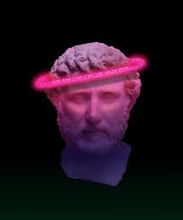
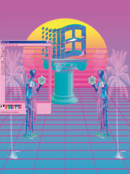

Historia del Vaporwave
Bienvenido a nuestra seccion de historia del Vaporwave, aqui te presentaremos la forma en que este surgio,
datos variados que quizas desconocias sobre el Vaporwave, trataremos de ser breves pero tampoco sin dejar cabos sueltos para
lograr brindarte mayores conocimientos, asi que, esperamos que sea de tu agrado!
¿Que es el Vaporwave?
El Vaporwave es un género musical que surgió a mediados de 2010 a partir de mezclar géneros de baile indie como seapunk, witch house y chillwave con estilos de otras décadas, principalmente de finales de los años 70 y los años 80 (como el funk o el New Age).
A pesar de que hay mucha diversidad y ambigüedad en su actitud y mensaje, el vaporwave a veces puede ser tomado como una crítica y una parodia a la sociedad de consumo y a la cultura yuppie de los años 80, mientras estéticamente exhibe una curiosa y nostálgica fascinación por los artefactos
y la estética retro, las modas y tendencias de décadas pasadas así como publicidad de las mismas.
ambién es un estilo artístico digital. En cuanto a lo visual, el Vaporwave utiliza paisajes, obras de arte (especialmente escultura helenística, pinturas del Renacimiento y del Impresionismo), aparatos o software de los 90's y principios de los 2000's (como se ve en las portadas de los álbumes
y vídeos musicales) que en conjunto se conocen como estética (o también "ＡＥＳＴＨＥＴＩＣＳ"). La imagen asociada con Vaporwave incluye también Glitch art, diseños de páginas web de los 90, antiguas presentaciones de ordenador, estética cyberpunk, uso de caracteres japoneses y otra escritura
no occidental y colores llamativos.
Origen y precursores
Los primeros registros (aunque se desconoce el origen exacto) del vaporwave son del canal de Youtube "sunsetcorp" que ralentizaba partes de algunas canciones para hacer sus videos, aunque para ser más preciso el primer video vaporwave fue titulado "angel"
por el canal ya mencionado (sunsetcorp) el 19 de julio de 2009 dónde se escucha una parte de la canción "only over You" del grupo Fleetwood Mac, está parte de la canción se ralentizo y entró en un efecto "loop" en el que solo se repetía esa parte, acompañado de videos cortos de los años 80 o 90,
podemos decir que el vaporwave se originó en Internet a mediados del 2009 como una variante irónica de chillwave y como una derivación del trabajo de artistas pop hipnagógicos como Ariel Pink y James Ferraro, quienes también se caracterizaron por la invocación de la cultura popular retro.